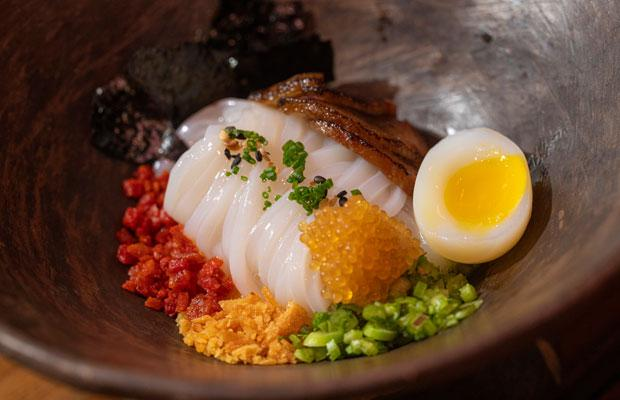
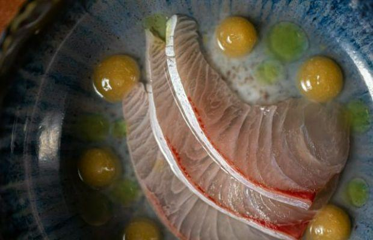
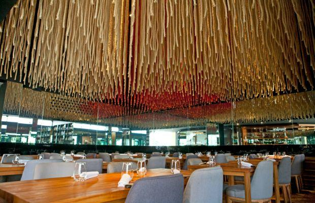

Maido Lima
Degustación con influencia amazónica del principal chef nikkei del Perú



Degustación con influencia amazónica del principal chef nikkei del Perú
Trayectoria: Votado como el número 1 de 2017 a 2019 y regresando a la cima de los 50 mejores restaurantes de América Latina en 2023, Maido se ubica constantemente entre los mejores restaurantes de la capital peruana, una ciudad con estándares gastronómicos notablemente altos. Todo se debe a la creatividad ilimitada y el compromiso con la gastronomía del chef y propietario Mitsuharu Tsumura, que perfeccionó en Osaka, Japón.
Descubriendo a los Nikkei: Hay un menú a la carta para los huéspedes habituales, pero los viajeros al destino deben optar por la Experiencia Nikkei para entender realmente de qué se trata Maido. A lo largo de unos 11 platos que incluyen múltiples refrigerios, el menú de degustación explora la cocina que combina Perú con Japón: piense en exquisitos nigiri y tiraditos, ambos elaborados con la pesca más fresca del día.
Bienvenido a Maido: en una sala grande y abierta en el barrio de Miraflores con techos altos cubiertos de cuerdas con forma de bandera japonesa, el restaurante es un ambiente relajado pero elegante donde cada huésped es recibido con un cordial "¡Maido!" bienvenido.
Hacia el Amazonas: Maido hace cada vez más referencia a ingredientes y tradiciones de la vasta Amazonía peruana, con platos como el paquete amarillo en miniatura de papada de cerdo y palmito que hace un guiño a un alimento básico de la selva tropical, bocadillos de 'jamón' hechos con pescado paiche sustentable y yuca servida. con frijol amazónico.
Si te gusta esto, te encantará: En Karai, dentro del hotel W Santiago, el equipo de Tsumura prepara más magia peruana, con nigiri, ramen, xiao long bao relleno de mariscos y una deliciosa hamburguesa nikkei con una salsa especial.
Punto extra: El Mejor Restaurante de América Latina 2023, patrocinado por S.Pellegrino & Acqua Panna, también alberga a la Mejor Sommelier 2023 de Beronia América Latina, Florencia Rey, cuyos magistrales maridajes complementan perfectamente los sabores Nikkei de Tsumura y destacan a los peruanos subrepresentados. productores.
Calle San Martin 399, Miraflores, Lima, Peru
+51 3135100